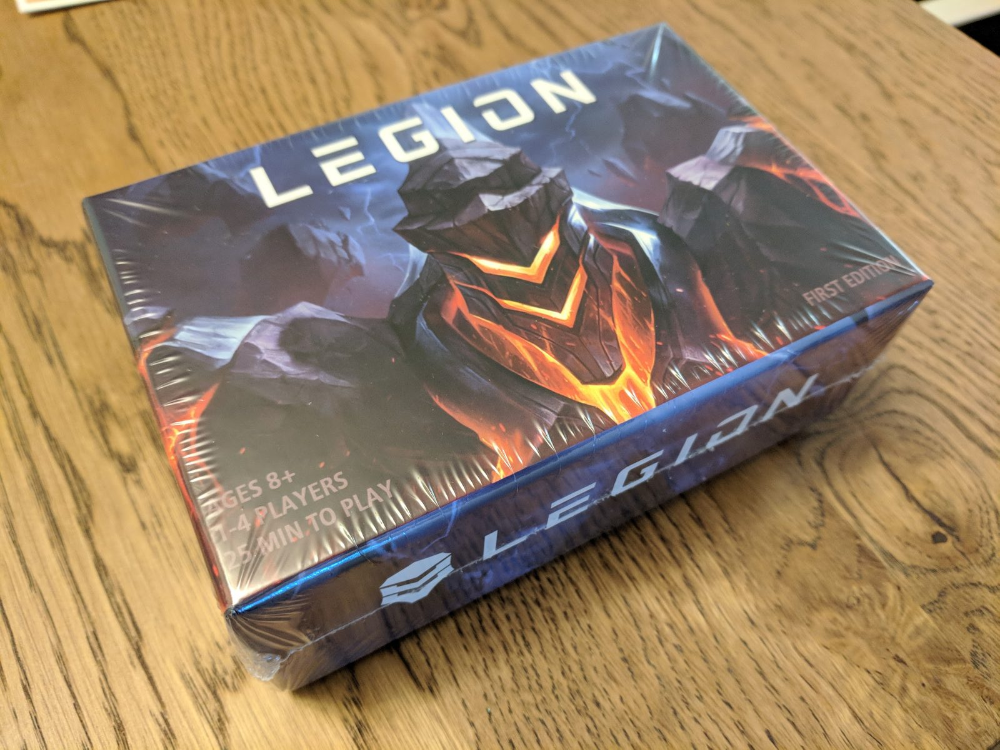
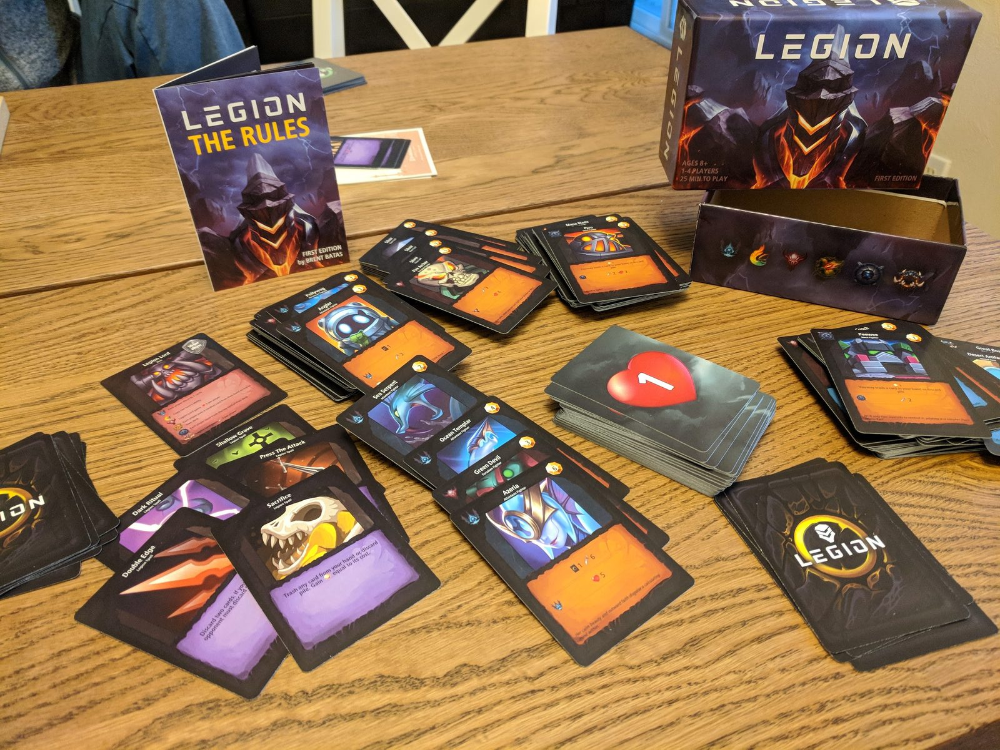
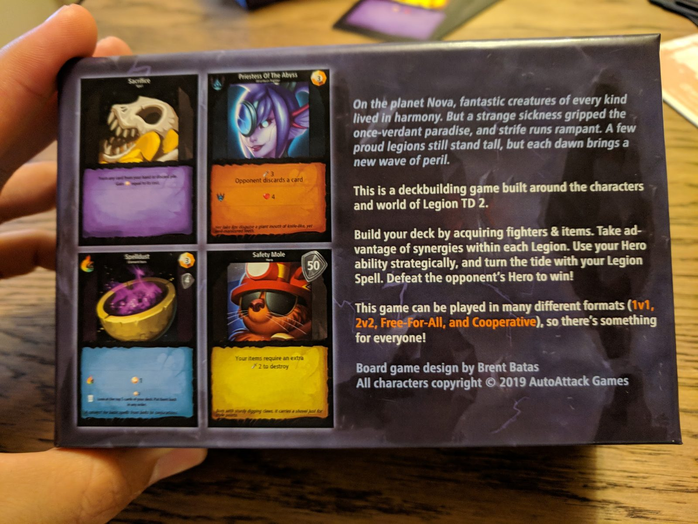
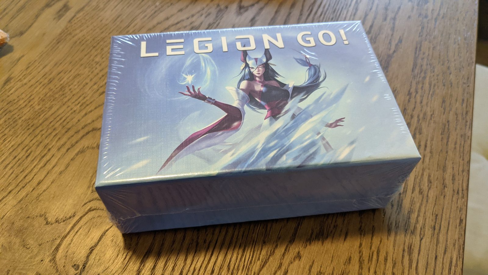
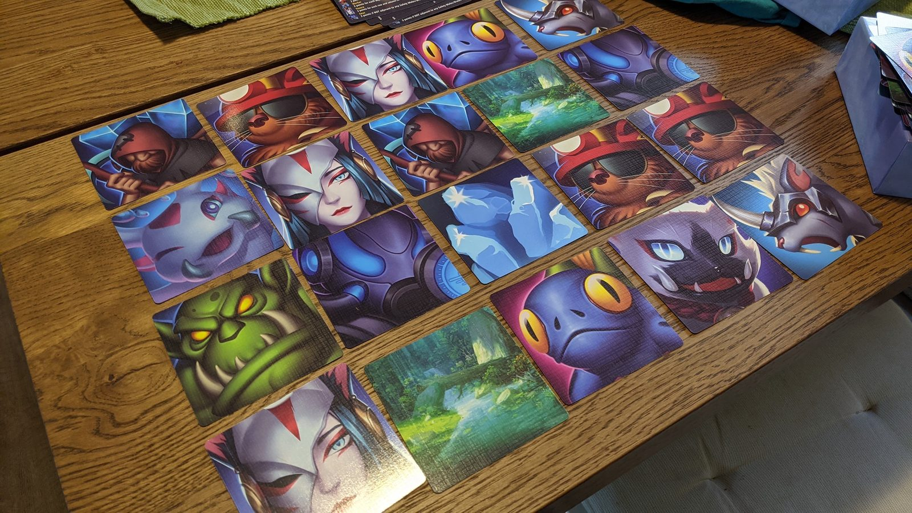
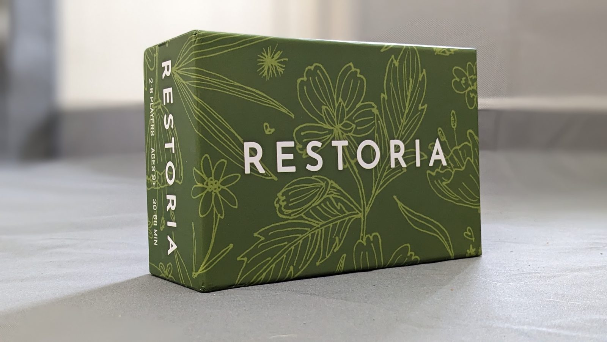
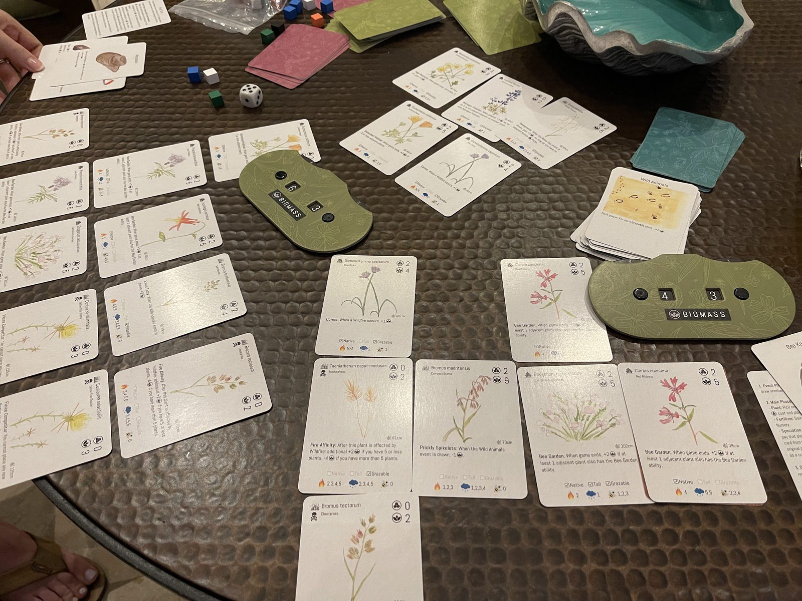
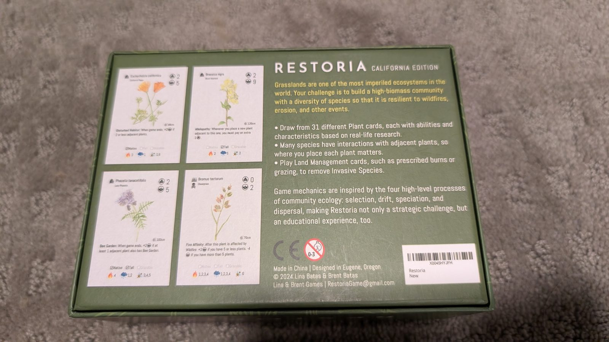

Legion
A strategy card game designed from scratch, based on Legion TD. Build a deck of fighters and items, play the synergies, and defeat the opponent's hero. One to four players, about 25 minutes, in 1v1, 2v2, free-for-all, or co-op. First edition, designed by Brent Batas.



Legion GO
Another board game in the Legion TD universe. The gameplay is simple, meant for a casual get-together, and it can be learned and played in about 20 minutes.


Restoria
A strategy card game about restoring California grasslands, from Lina & Brent Games. Thirty-one hand-illustrated plant species, with abilities drawn from real ecology research. Designed with ecologist Lina Aoyama Batas. Two to six players, about 30–45 minutes per session.



On Amazon